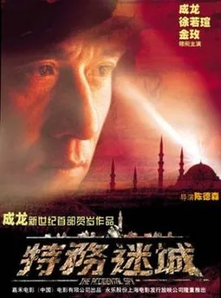

The genetics
A stolen bioweapon is the object everyone in this Jackie Chan action comedy is chasing. In the original Hong Kong version, 'the thing' is Anthrax II, a biological weapon deadlier than anthrax that has already killed many villagers in Anatolia; the film opens with scientists looking for a cure for the apparent pneumonia outbreak and being murdered by terrorists. A crime lord wants to buy the agent and the CIA wants to secure it, and the hero ends up retrieving it for the agency. Nobody in the film is shown making the weapon, and the story treats it purely as a deadly MacGuffin. In the international version distributed by Dimension Films the bioweapon was replaced by 'Opio Maxa', a super-potent opium, which removes the film's only connection with biology.
How genetics is portrayed
- Overall portrayal of genetics
- negative The bioweapon is only a deadly object fought over by criminals and spies, with no positive counterpart.
- Outcome of the genetic intervention
- negative Anthrax II has already killed many people in Anatolia, and the hunt for it leads to further killings.
- Lee Sang Zen
- villain Aim: commercial, power (negative). The crime lord tries to acquire Anthrax II, double-crosses Yuen and kills Yong, and dies in the final chase.
- The CIA (Carmen, Philip and Manny Liu)
- ambivalent Aim: military (positive). The agency manipulates Yuen into recovering the weapon and plans to buy it from Zen; the film presents its agents as allies who nonetheless use and endanger him.
The story
Buck Yuen, a Hong Kong exercise-equipment salesman and orphan, becomes a local celebrity after foiling a bank robbery. A man named Manny Liu tells him that a dying Korean, Park Won-sung, is searching for his long-lost son, and Yuen travels to Seoul, where Park offers him his estate if he can win a game of clues. Following the clues to Istanbul, Yuen is attacked by thugs demanding 'the thing'. Two CIA agents, Carmen and Philip, explain that it is Anthrax II, a biological weapon deadlier than anthrax that has already killed many people in Anatolia, and that the crime lord Lee Sang Zen wants to buy it. Yuen finds two vials in a church basement and trades them for Yong, a woman enslaved by Zen, but Zen kills her. Yuen recovers the weapon in a road chase in which Zen dies, and learns that the whole adventure was a CIA test to recruit him as a spy.